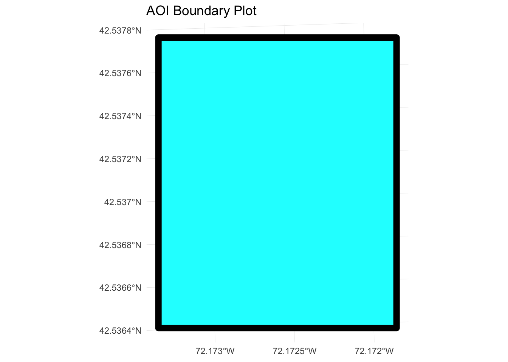

The data we’ll be using come from the NEON Harvard Forest field site, which we have been working with in previous episodes.
library(sf)## Linking to GEOS 3.6.1, GDAL 2.1.3, PROJ 4.9.3library(tidyverse)## Registered S3 methods overwritten by 'ggplot2':
## method from
## [.quosures rlang
## c.quosures rlang
## print.quosures rlang## ── Attaching packages ─────────────────────────────────────── tidyverse 1.2.1 ──## ✔ ggplot2 3.1.1 ✔ purrr 0.3.2
## ✔ tibble 2.1.3 ✔ dplyr 0.8.1
## ✔ tidyr 0.8.3 ✔ stringr 1.4.0
## ✔ readr 1.3.1 ✔ forcats 0.4.0## ── Conflicts ────────────────────────────────────────── tidyverse_conflicts() ──
## ✖ dplyr::filter() masks stats::filter()
## ✖ dplyr::lag() masks stats::lag()theme_set(theme_minimal())We will use the sf package to work with vector data in R. This stands for “Spatial features”.
rgdal automatically loads when sf is loaded. I’ll mention here that there is another package called sp, which was the “old” one used to work with vector files in R. We will use sf in this course, as it is newer and more robust (as in, doesn’t change the data type when doing things linke merges and joins) - but you sometimes will need to use sp with other R packages, most notably raster, - and you’ll see it on stackoverflow.
The shapefiles that we will import are: - A polygon shapefile representing our field site boundary, which we’ll call our Area Of Interest or AOI - A line shapefile representing roads - A point shapefile representing the location of the Fisher flux tower - which we will call “tower” from now on.
# To import shapefiles we use the sf function st_read()
aoi_boundary_HARV <- st_read("data/NEON-DS-Site-Layout-Files/HARV/HarClip_UTMZ18.shp")## Reading layer `HarClip_UTMZ18' from data source `/Users/darya/Dropbox (Sydney Uni)/Training/19_09_11_ResBaz/19_01_11_ResBazGIS/data/NEON-DS-Site-Layout-Files/HARV/HarClip_UTMZ18.shp' using driver `ESRI Shapefile'
## Simple feature collection with 1 feature and 1 field
## geometry type: POLYGON
## dimension: XY
## bbox: xmin: 732128 ymin: 4713209 xmax: 732251.1 ymax: 4713359
## epsg (SRID): 32618
## proj4string: +proj=utm +zone=18 +datum=WGS84 +units=m +no_defsLet’s look at the metadata of our shapefile…
…
Note that the spatial extent for a shapefile represents the combined extent for all spatial objects in the shapefile.
There are commands to view this information from the R object as well. They start with “st”, which I assume means “standard”?…
st_geometry_type(aoi_boundary_HARV)## [1] POLYGON
## 18 Levels: GEOMETRY POINT LINESTRING POLYGON ... TRIANGLE# you can see all possible 18 geometry types using
levels(st_geometry_type(aoi_boundary_HARV))## [1] "GEOMETRY" "POINT" "LINESTRING"
## [4] "POLYGON" "MULTIPOINT" "MULTILINESTRING"
## [7] "MULTIPOLYGON" "GEOMETRYCOLLECTION" "CIRCULARSTRING"
## [10] "COMPOUNDCURVE" "CURVEPOLYGON" "MULTICURVE"
## [13] "MULTISURFACE" "CURVE" "SURFACE"
## [16] "POLYHEDRALSURFACE" "TIN" "TRIANGLE"# note some are more useful than others
# lets look at the CRS
st_crs(aoi_boundary_HARV)## Coordinate Reference System:
## EPSG: 32618
## proj4string: "+proj=utm +zone=18 +datum=WGS84 +units=m +no_defs"# Our data in the CRS UTM zone 18N. The CRS is critical to interpreting the object’s extent values as it specifies units. To find the extent of our AOI, we can use st_bbox():
st_bbox(aoi_boundary_HARV)## xmin ymin xmax ymax
## 732128.0 4713208.7 732251.1 4713359.2We can also see this when we “view” the df
aoi_boundary_HARV## Simple feature collection with 1 feature and 1 field
## geometry type: POLYGON
## dimension: XY
## bbox: xmin: 732128 ymin: 4713209 xmax: 732251.1 ymax: 4713359
## epsg (SRID): 32618
## proj4string: +proj=utm +zone=18 +datum=WGS84 +units=m +no_defs
## id geometry
## 1 1 POLYGON ((732128 4713359, 7...aoi_boundary_HARV %>% ggplot() +
geom_sf(size = 3, color = "black", fill = "cyan1") +
ggtitle("AOI Boundary Plot") +
coord_sf()
# Using the steps above, import the HARV_roads and HARVtower_UTM18N layers into R. Call the HARV_roads object lines_HARV and the HARVtower_UTM18N point_HARV.
# Answer the following questions:
#
#1. What type of R spatial object is created when you import each layer?
#2. What is the CRS and extent for each object?
#3.Do the files contain points, lines, or polygons?
#4. How many spatial objects are in each file?
lines_HARV <- st_read("data/NEON-DS-Site-Layout-Files/HARV/HARV_roads.shp")## Reading layer `HARV_roads' from data source `/Users/darya/Dropbox (Sydney Uni)/Training/19_09_11_ResBaz/19_01_11_ResBazGIS/data/NEON-DS-Site-Layout-Files/HARV/HARV_roads.shp' using driver `ESRI Shapefile'
## Simple feature collection with 13 features and 15 fields
## geometry type: MULTILINESTRING
## dimension: XY
## bbox: xmin: 730741.2 ymin: 4711942 xmax: 733295.5 ymax: 4714260
## epsg (SRID): 32618
## proj4string: +proj=utm +zone=18 +datum=WGS84 +units=m +no_defspoint_HARV <- st_read("data/NEON-DS-Site-Layout-Files/HARV/HARVtower_UTM18N.shp")## Reading layer `HARVtower_UTM18N' from data source `/Users/darya/Dropbox (Sydney Uni)/Training/19_09_11_ResBaz/19_01_11_ResBazGIS/data/NEON-DS-Site-Layout-Files/HARV/HARVtower_UTM18N.shp' using driver `ESRI Shapefile'
## Simple feature collection with 1 feature and 14 fields
## geometry type: POINT
## dimension: XY
## bbox: xmin: 732183.2 ymin: 4713265 xmax: 732183.2 ymax: 4713265
## epsg (SRID): 32618
## proj4string: +proj=utm +zone=18 +datum=WGS84 +units=m +no_defsclass(lines_HARV)## [1] "sf" "data.frame"st_crs(lines_HARV)## Coordinate Reference System:
## EPSG: 32618
## proj4string: "+proj=utm +zone=18 +datum=WGS84 +units=m +no_defs"st_bbox(lines_HARV)## xmin ymin xmax ymax
## 730741.2 4711942.0 733295.5 4714260.0nrow(lines_HARV)## [1] 13